1. r = any s = 1 p = 1 Trivial. | 2. r = 1 + √2 s = 1 + √2 p = 15 – 10 √2 = .857+ Found by Maurizio Morandi in June 2015. | 3. 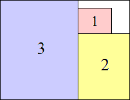 r = √15 / 3 s = √15 p = 14/15 = .933+ Found by Maurizio Morandi in June 2015. |
| 4. 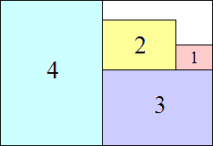 r = (3 + √73) / 8 s = (3 + √73) / 2 p = 15 (3√73 – 41) / 256 = .900+ Found by Maurizio Morandi in June 2015. | 5. 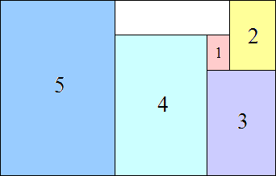 r = 2 √15 / 5 s = 2 √15 p = 11/12 = .916+ Found by Maurizio Morandi in June 2015. | 6. 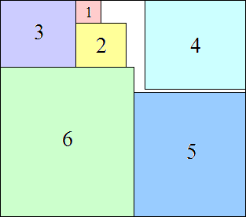 r = (√273 – 3) / 12 s = (3 + √273) / 2 p = 91 (47 – √273) / 2904 = .955+ Found by Maurizio Morandi in June 2015. |
7. r = 2 s = 12 p = 35/36 = .972+ Found by Maurizio Morandi in June 2015. | 8. 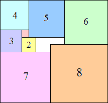 r = √210 / 14 s = √210 p = 34/35 = .971+ Found by Maurizio Morandi in June 2015. | 9. 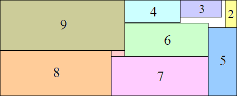 r = (15 + √365) / 14 s = (15 + √365) / 2 p = 57 (59 – 3 √365) / 98 = .980+ Found by Maurizio Morandi in June 2015. |
| 10. 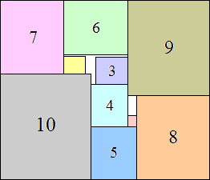 r = √391 / 17 s = √391 p = 385/391 = .984+ Found by Maurizio Morandi in June 2015. | 11. 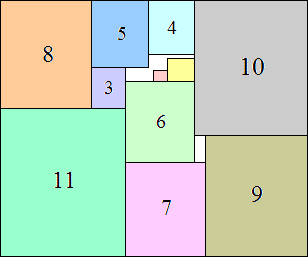 r = 3 √57 / 19 s = 3 √57 p = 506/513 = .986+ Found by Maurizio Morandi in June 2015. | 12. 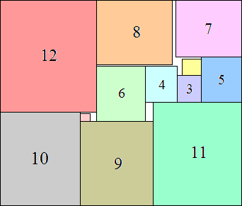 r = √165 / 11 s = 2 √165 p = 65/66 = .984+ Found by Maurizio Morandi in June 2015. |
| 13. 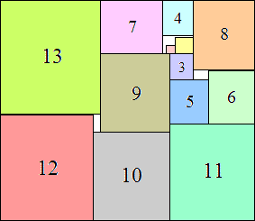 r = 5 / √19 s = 7 + 5 √19 p = 91 (262 – 35 √19) / 10082 = .987+ Found by Maurizio Morandi in June 2015. | 14. 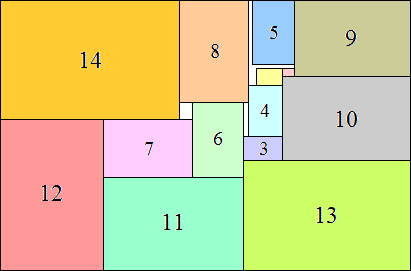 r = 3/2 s = 32 p = 1015/1024 = .991+ Found by Maurizio Morandi in June 2015. | 15. 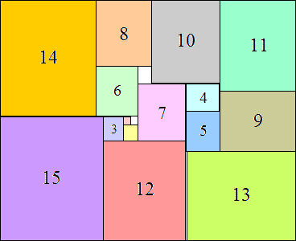 r = 3 √66 / 11 – 1 s = 11 + 3 √66 p = 1240 (65 – 6 √66) / 20339 = .991+ Found by Maurizio Morandi in June 2015. |
| 16. 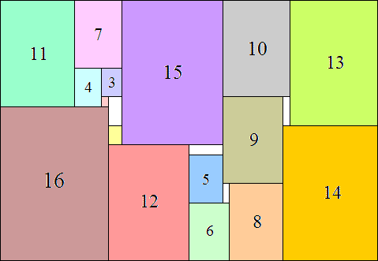 r = 2 √42 / 9 s = 6 √42 p = 187/189 = .989+ Found by Maurizio Morandi in June 2015. | 17. 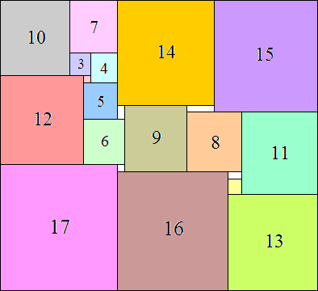 r = √1794 / 39 s = √1794 p = 595/598 = .994+ Found by Maurizio Morandi in June 2015. | 18. 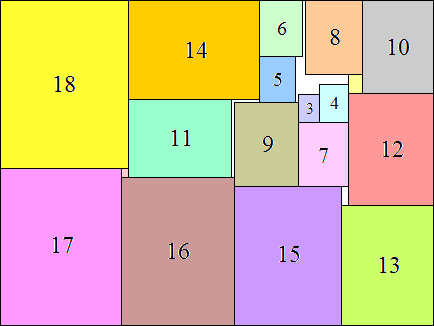 r = √2135 / 35 s = √2135 p = 2109/2135 = .987+ Found by Maurizio Morandi in June 2015. |